Two wheels, open roads.
A home for my bikes, motorcycle rallies, memorable roads, and practical resources for the ride.
My bikes
Two custom Harley-Davidsons and the roads that came with them. Select a photo to enlarge it.
First bike: custom Harley-Davidson 883
Photos from the 883 collection.


Second bike: black custom Harley-Davidson XL
Black paint and chrome on a custom XL.


After Mods

Rallies near and far
Check organizers for current dates, locations, registration, admission, and weather before making plans. Some rallies change locations each year.
Pennsylvania & nearby
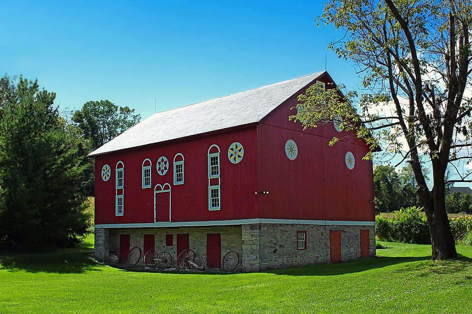
Troxell-Steckel Park, WhitehallLehigh Valley Bike Fest
Whitehall, Pennsylvania: a local gathering with bikes, vendors, music, and stunt shows. Confirm the next event with the host.
Event information → Gettysburg, Pennsylvania
Gettysburg, PennsylvaniaGettysburg Bike Week
Gettysburg, Pennsylvania: bike shows, vendors, music, and riding in historic country.
Organizer →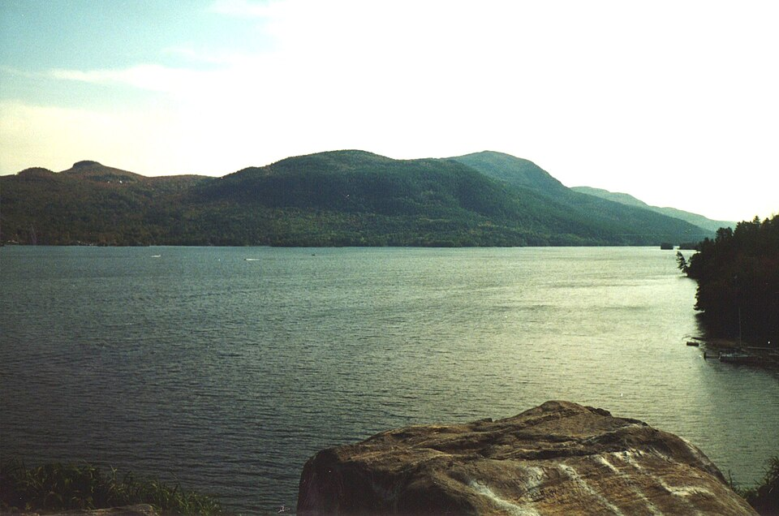
Lake George, New YorkAmericade
Lake George, New York: touring, guided rides, demos, and gatherings in the Adirondacks.
Organizer →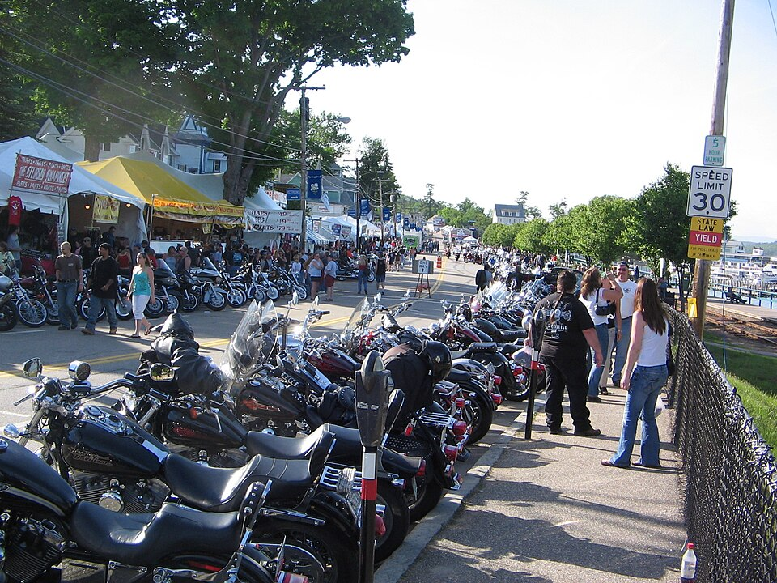
Laconia Bike Week, 2007Laconia Motorcycle Week
Lakes Region, New Hampshire: a long-running rally with scenic rides and events.
Organizer →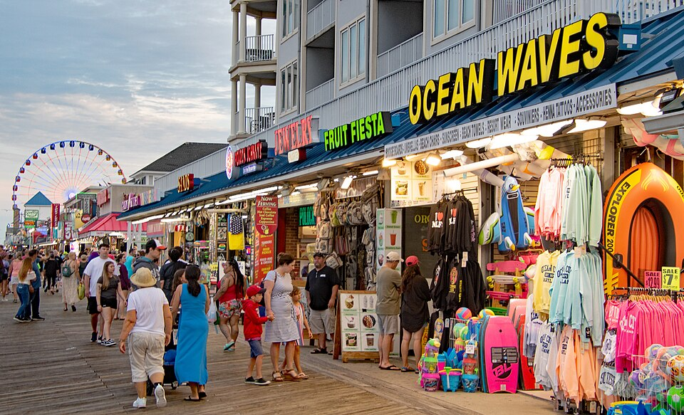
Ocean City, MarylandOcean City BikeFest / OC Rock & Ride
Ocean City, Maryland: motorcycles, live music, vendors, and Eastern Shore riding.
Organizer →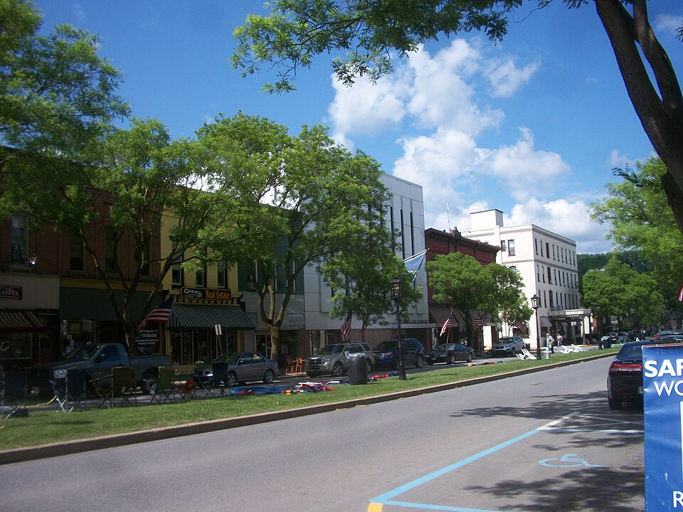
Wellsboro, PennsylvaniaBMW Riders Association National Rally
The 2027 rally heads to Wellsboro, Pennsylvania, near Pine Creek Gorge and the roads of the Pennsylvania Wilds. Check the organizer for future locations and registration.
Rally information →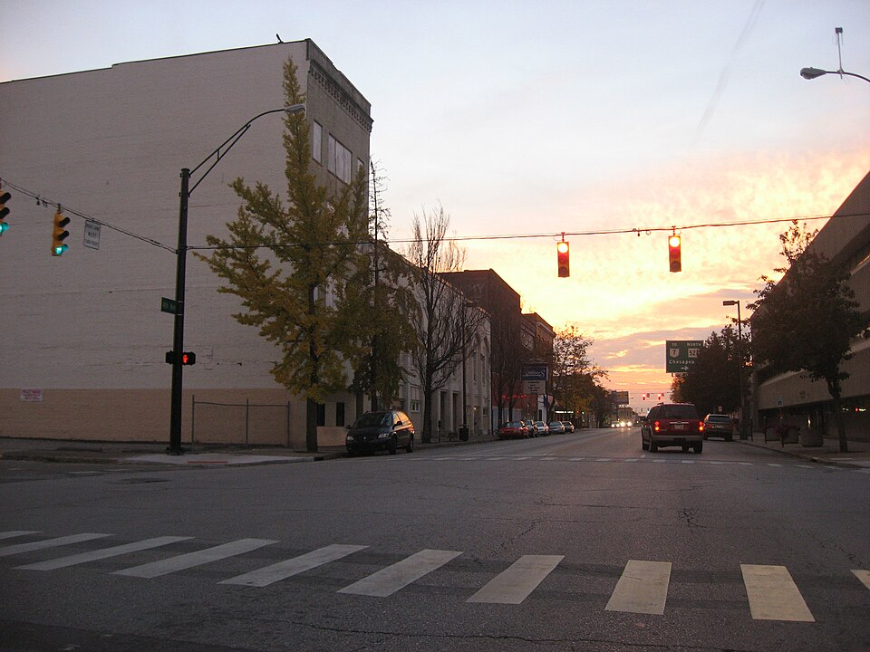
Huntington, West VirginiaMSTA STAR Rally
The Motorcycle Sport Touring Association’s 2027 national rally is in Huntington, West Virginia. Check the organizer for registration and future locations.
Rally information →Perkiomen National Meet
Oley, Pennsylvania: an Antique Motorcycle Club of America national meet with judging. Photo: a historic eastern Pennsylvania barn.
Meet information →Rumble Through the Valley
Ebensburg, Pennsylvania: motorcycles, music, vendors, and a community ride. Photo: Laconia Bike Week, 2007.
Organizer →Motorama Races & Shows
Harrisburg, Pennsylvania: an indoor motorsports show with motorcycle racing and displays. Photo: Gettysburg countryside.
Organizer →Chesapeake Chapter National Meet
Upperco, Maryland: an AMCA antique motorcycle meet; check the club schedule for current details. Photo: Ocean City, Maryland.
AMCA schedule →
Mid-Atlantic Retread Rally
The Retreads’ 2027 rally is in Bird-in-Hand, Pennsylvania. Check club eligibility and future locations. Photo: nearby Lancaster.
Club events →Yankee Chapter National Meet
Greenfield, Massachusetts: an AMCA antique motorcycle meet. Photo: Laconia Bike Week, 2007.
AMCA schedule →Wauseon National Meet
Wauseon, Ohio: an AMCA national gathering for antique motorcycles. Photo: Laconia Bike Week, 2007.
AMCA schedule →Allegheny Mountain Chapter Road Run
The AMCA’s 2027 road run is based in Canaan Valley, West Virginia. Photo: Huntington, West Virginia.
AMCA schedule →Potomac Vintage Riders Swap Meet
York, Pennsylvania: vintage motorcycles, parts, and a bike show. Check the listing for current event information. Photo: Gettysburg countryside.
Event listing →Reading Motorcycle Club Swap Meet & Day Drags
Oley, Pennsylvania: motorcycle parts and drag racing. Check the listing for current event details. Photo: an eastern Pennsylvania barn.
Event listing →Destination rallies
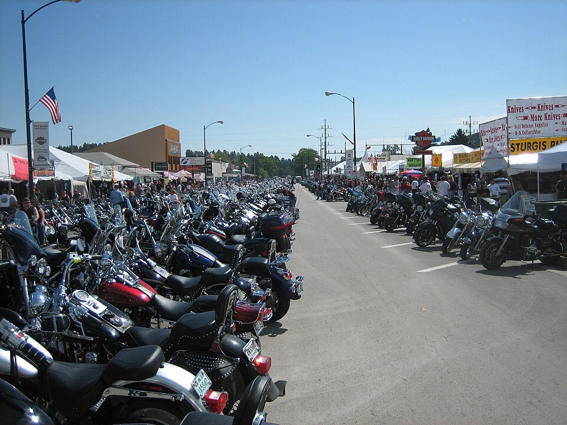
Sturgis Bike WeekSturgis Motorcycle Rally
Sturgis, South Dakota: a major motorcycle gathering and a gateway to the Black Hills.
Organizer →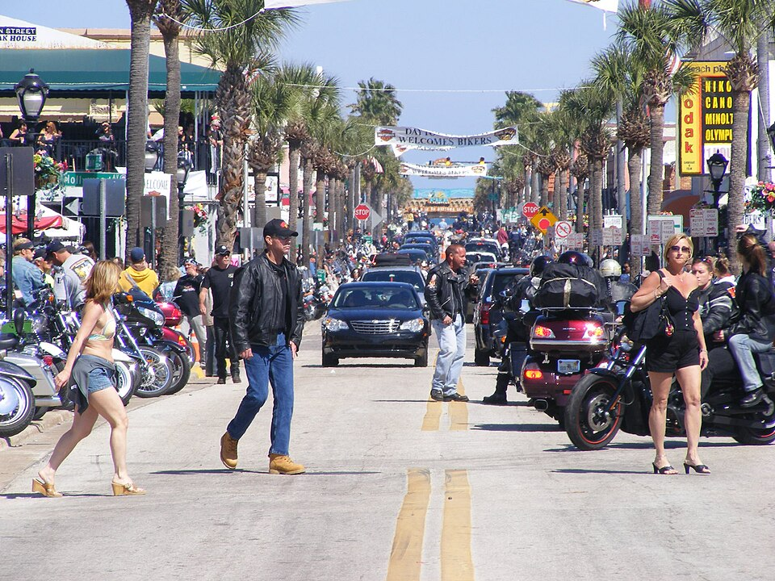
Daytona Bike Week, 2008Daytona Bike Week
Daytona Beach, Florida: racing, rides, vendors, and motorcycle events.
Event information →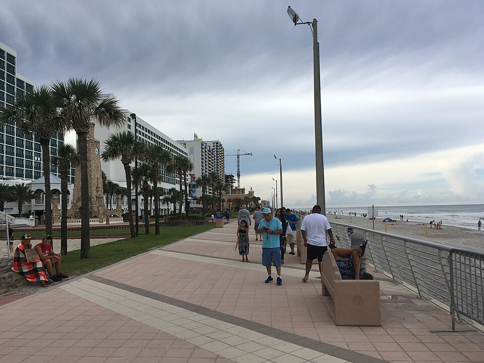
Daytona Beach boardwalkDaytona Biketoberfest
Daytona Beach, Florida: a fall gathering with motorcycle shows, racing, live music, and coastal rides.
Event information →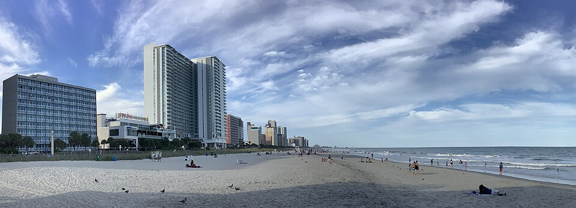
Myrtle Beach, South CarolinaMyrtle Beach Bike Week
South Carolina’s Grand Strand: coastal riding, vendors, and rally events in the spring and fall.
Organizer →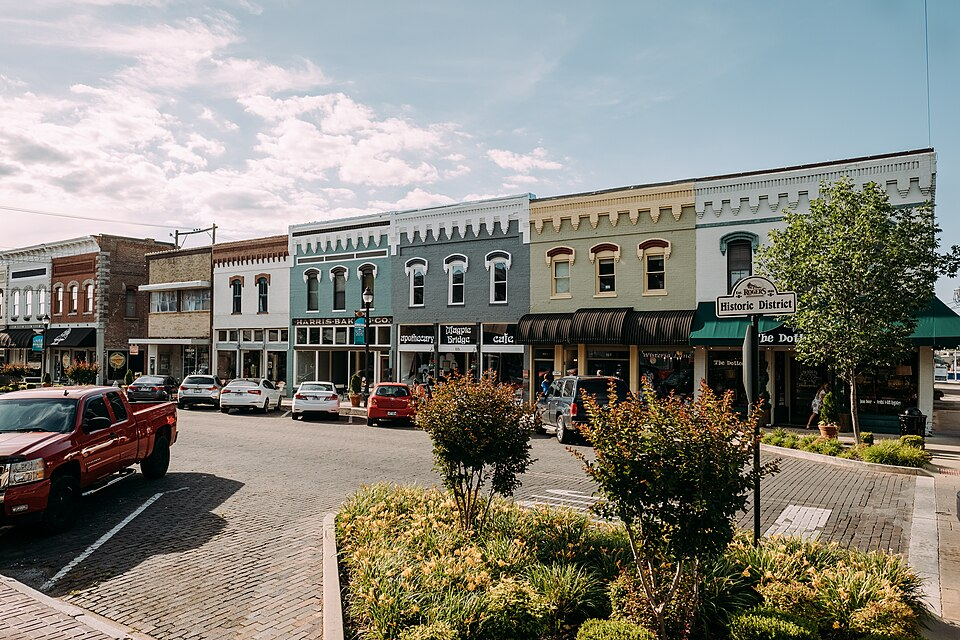
Downtown Rogers, ArkansasBikes, Blues & BBQ
Northwest Arkansas: a charity-focused rally with music, barbecue, and mapped rides through the Ozarks.
Organizer →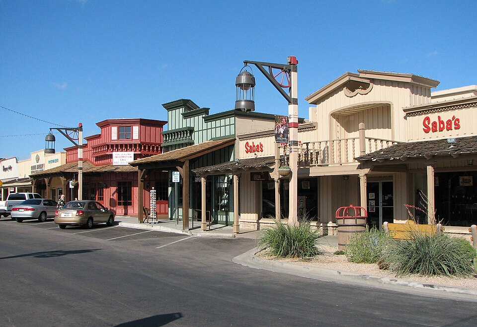
Old Town Scottsdale, ArizonaArizona Bike Week
Scottsdale, Arizona: bike shows, concerts, vendors, and a chance to explore the Southwest.
Organizer →Leesburg Bikefest
Leesburg, Florida: motorcycles, music, and vendors in the downtown area. Photo: Daytona Bike Week, 2008.
Organizer →Lone Star Rally
Galveston, Texas: motorcycles, live music, and waterfront events. Photo: Laconia Bike Week, 2007.
Organizer →Spring Heat H.O.G. Touring Rally
The 2027 Harley Owners Group tour travels from Utah to Scottsdale, Arizona. Check membership and registration requirements. Photo: Scottsdale.
H.O.G. rallies →Ride the Ozarks H.O.G. Touring Rally
The 2027 Harley Owners Group tour travels from Missouri to Rogers, Arkansas. Check membership and registration requirements. Photo: Rogers.
H.O.G. rallies →Flatirons Chapter National Meet
The AMCA’s antique motorcycle schedule includes Estes Park, Colorado. Check the club for current dates and details. Photo: Sturgis, South Dakota.
AMCA schedule →Gulf Coast H.O.G. Rally
The 2027 Harley Owners Group rally is in Beaumont, Texas; check membership and registration. Photo: Laconia Bike Week, 2007.
H.O.G. rallies →Heart of Texas H.O.G. Rally
The 2027 Harley Owners Group rally explores Dallas and Fort Worth; check membership and registration. Photo: Sturgis, South Dakota.
H.O.G. rallies →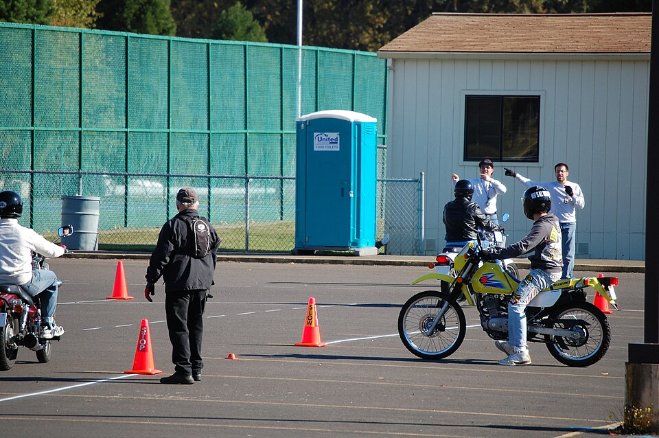
Great Northwest H.O.G. Rally
The 2027 Harley Owners Group rally is based in Tigard, Oregon; check membership and registration. Photo: Oregon rider training.
H.O.G. rallies →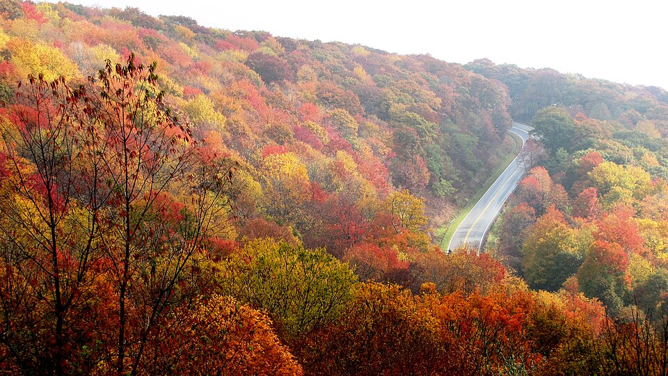
Great Southern H.O.G. Rally
The 2027 Harley Owners Group rally is in Cookeville, Tennessee; check membership and registration. Photo: Cherohala Skyway.
H.O.G. rallies →Bikes, Beaches & Bridges H.O.G. Rally
The 2027 Harley Owners Group rally is in St. Petersburg, Florida; check membership and registration. Photo: Daytona Beach.
H.O.G. rallies →Noteworthy rides
Start close to the Lehigh Valley or plan a longer trip. Check road conditions, seasonal closures, weather, entrance fees, and park rules before riding. Watch for wildlife and gravel, plan fuel stops, and ride within your limits.
Pennsylvania & nearby rides
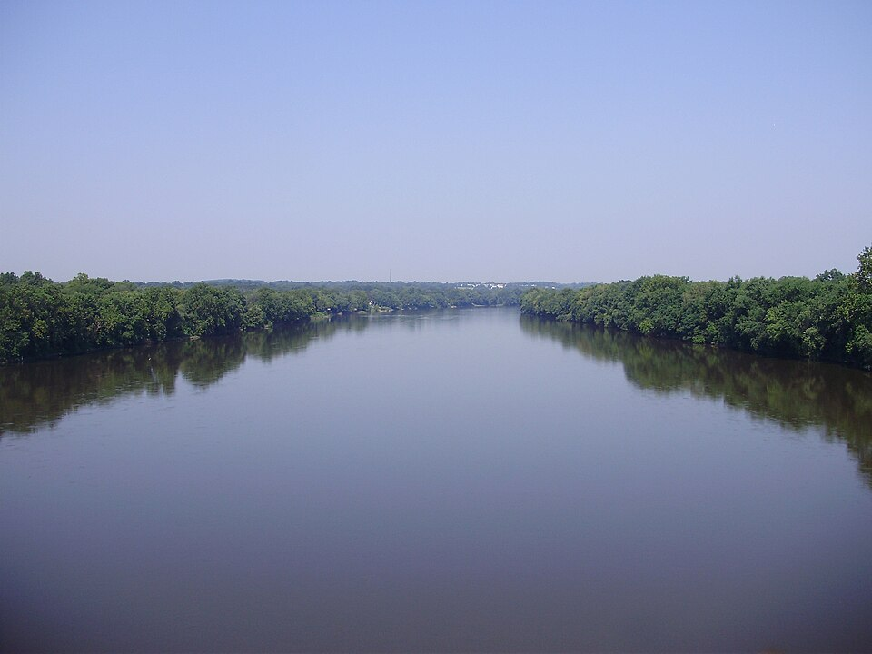
Lower Delaware RiverLower Delaware River
Follow the river on PA 611 and PA 32 through scenic Bucks and Northampton County communities.
NPS driving guide →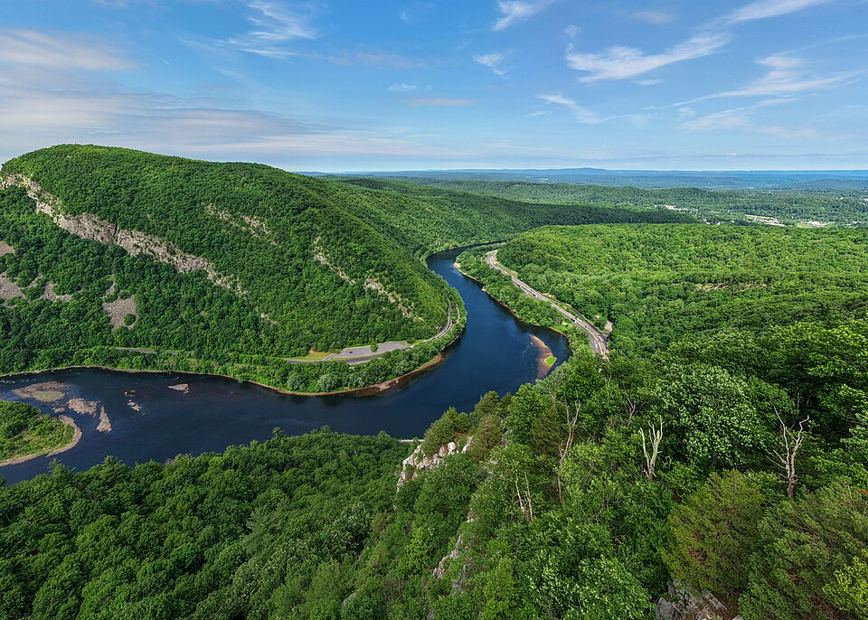
Delaware Water GapDelaware Water Gap
Explore the river valley on US 209 and historic Old Mine Road; check for closures and uneven pavement.
NPS scenic drives →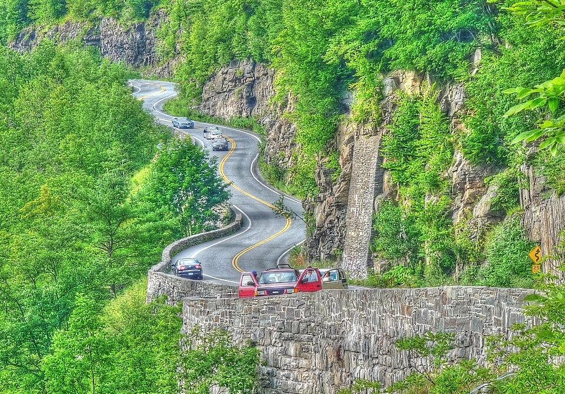
Hawk’s Nest, New YorkHawk’s Nest & Upper Delaware
New York Route 97 north of Sparrow Bush winds above the Delaware River, with overlooks along the Upper Delaware Scenic Byway.
NPS overlook guide →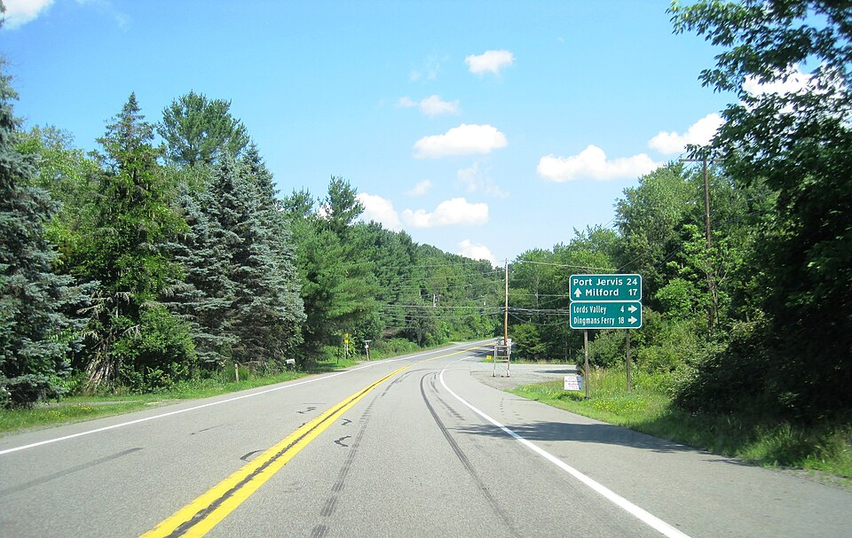
US Route 6, Pike CountyPA Route 6 motorcycle loops
Choose a mapped loop through the Poconos, Endless Mountains, or Pennsylvania Wilds, with small towns, lakes, and mountain scenery.
Maps and itineraries →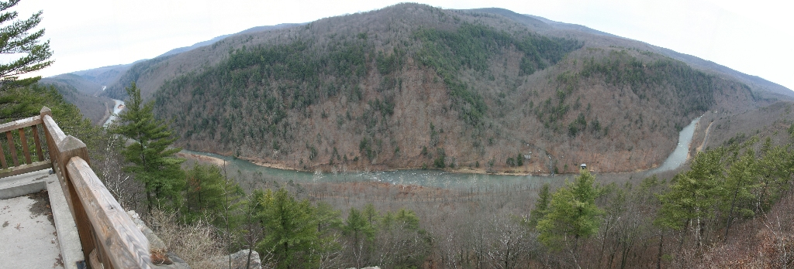
Pine Creek Gorge, PennsylvaniaPennsylvania Grand Canyon
Ride through the Pennsylvania Wilds near Wellsboro, then follow PA 660 west to Leonard Harrison State Park for views over Pine Creek Gorge. Colton Point State Park offers overlooks on the opposite rim.
State park information →Longhouse National Scenic Byway
Explore the Allegheny National Forest and reservoir country on a mapped riding itinerary. Photo: Pine Creek Gorge in the Pennsylvania Wilds.
PA Wilds itineraries →Eastern Continental Divide Loop
A Pennsylvania Wilds route through forest roads and elk country. Photo: Pine Creek Gorge in the Pennsylvania Wilds.
PA Wilds itineraries →Allegheny Highlands Route 6
Follow the PA Wilds itinerary through the Allegheny Highlands. Photo: Route 6 in Pike County.
PA Wilds itineraries →
Town and Country Motorcycle Ramble
Tour the Cumberland Valley with possible stops at Pine Grove Furnace and Waggoner’s Gap. Photo: Gettysburg Battlefield.
Pennsylvania ride guide →Ride the Elk Range
Plan a ride through the elk country of the Pennsylvania Wilds. Photo: Pine Creek Gorge in the Pennsylvania Wilds.
Pennsylvania ride guide →Tracy Ridge Loop
A mapped Allegheny National Forest motorcycle itinerary. Photo: Pine Creek Gorge in the Pennsylvania Wilds.
PA Wilds itineraries →Bradford–Eldred–Rock City Loop
Explore a mapped ride through northern Pennsylvania and nearby New York. Photo: Route 6 in Pike County.
PA Wilds itineraries →Allegheny Southeast Gateway
Discover the Allegheny National Forest from the I-80 corridor using the mapped route. Photo: Pine Creek Gorge in the Pennsylvania Wilds.
PA Wilds itineraries →Cook Forest & Clarion River
Explore the Cook Forest area and the scenic Clarion River corridor. Photo: Pine Creek Gorge in the Pennsylvania Wilds.
Great Outdoors ride guide →Wykoff Run Road
Ride through the Quehanna Wild Area on a twisting road beside mountain streams. Photo: Pine Creek Gorge in the Pennsylvania Wilds.
Great Outdoors ride guide →Mountain roads & destination rides
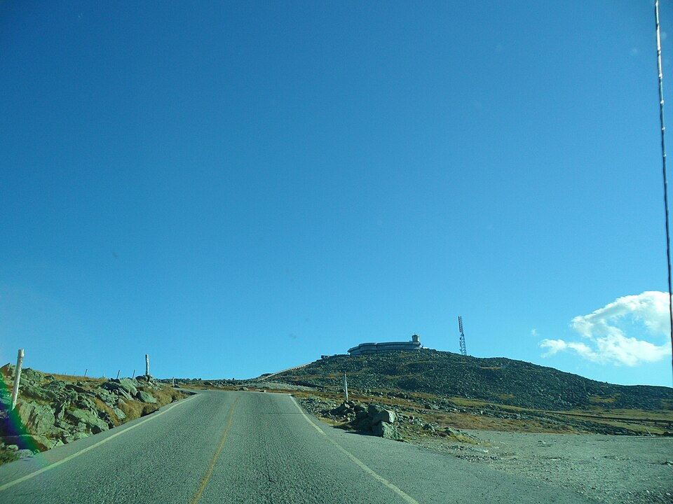
Mount Washington Auto RoadMount Washington State Park & Auto Road
New Hampshire: ride the steep, 7.6-mile Mount Washington Auto Road to the summit and state park in the White Mountains. Check the road’s weather, seasonal hours, fees, and vehicle restrictions before setting out.
Auto Road information →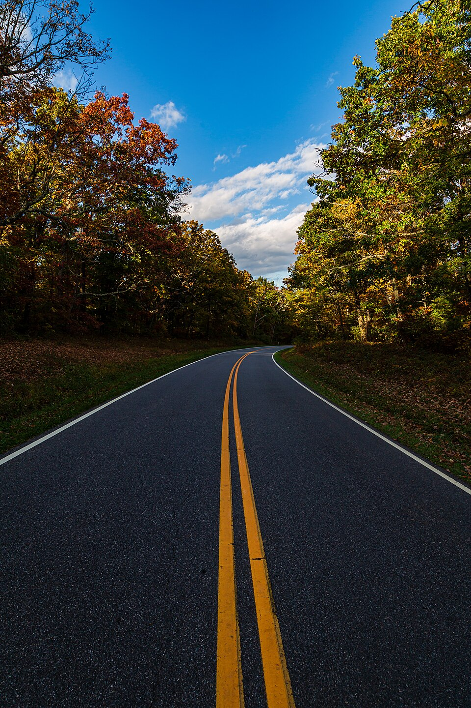
Skyline Drive, VirginiaShenandoah National Park & Skyline Drive
Virginia: ride 105-mile Skyline Drive along the park’s Blue Ridge crest, with scenic overlooks and access to hiking trails and waterfalls. Watch for wildlife and the mostly 35 mph speed limit; check park fees and weather closures.
NPS driving guide →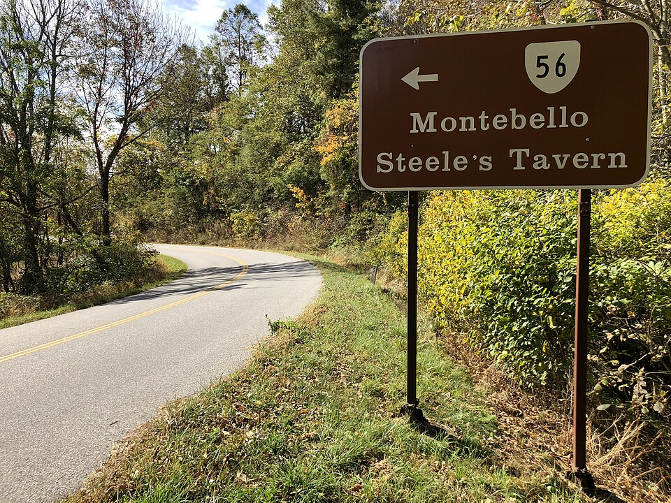
Blue Ridge Parkway at Tye River GapBlue Ridge Parkway
Mountain overlooks and sweeping curves through Virginia and North Carolina. Connect with Skyline Drive at Rockfish Gap; allow time for stops and changing weather.
Ride guide →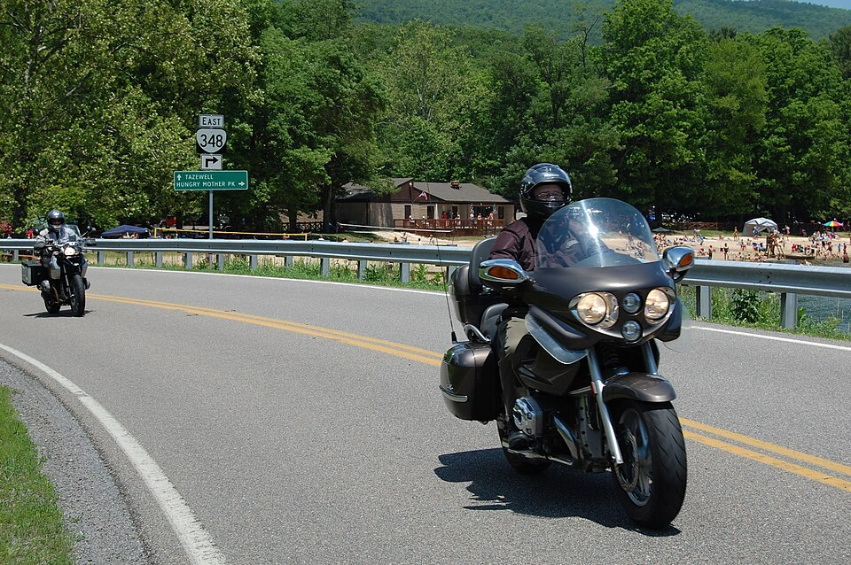
Virginia Route 16Back of the Dragon
Virginia Route 16 between Marion and Tazewell crosses three mountain ranges on a demanding, winding 32-mile ride.
Route information →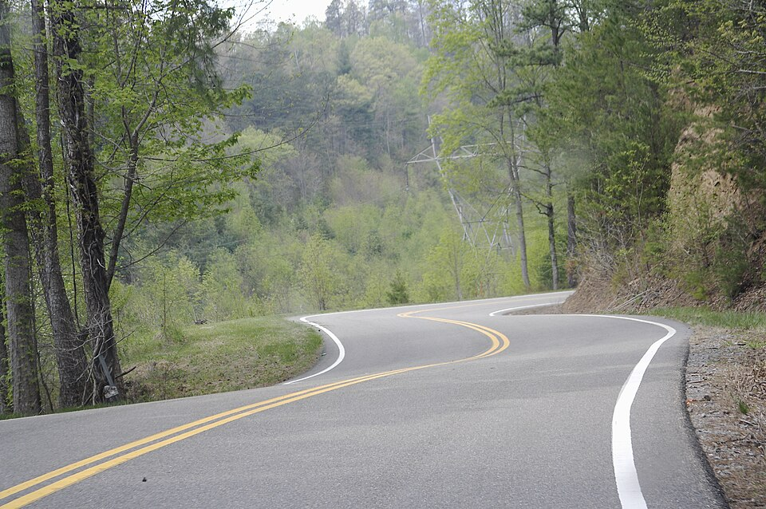
Tail of the DragonTail of the Dragon
US 129 near Deals Gap on the Tennessee–North Carolina border: an 11-mile stretch known for tight curves. Ride at your own pace and stay in your lane.
Route information → Cherohala Skyway, North CarolinaCherohala Skyway
Between Tellico Plains, Tennessee, and Robbinsville, North Carolina, this mountain byway offers high-elevation overlooks through national forests.
Forest Service guide →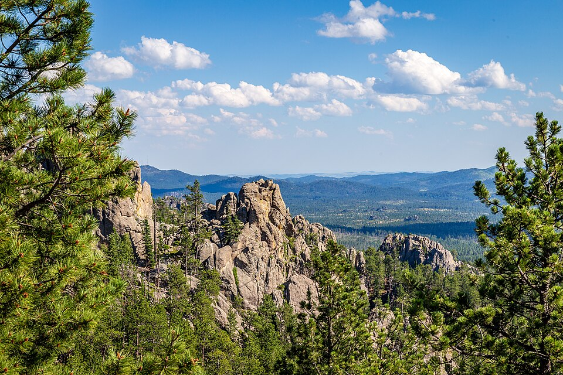
The Needles, Custer State ParkCuster State Park & the Black Hills
South Dakota: explore the park’s scenic roads and wildlife country on a longer trip or alongside a visit to Sturgis. Give animals plenty of space.
State park information →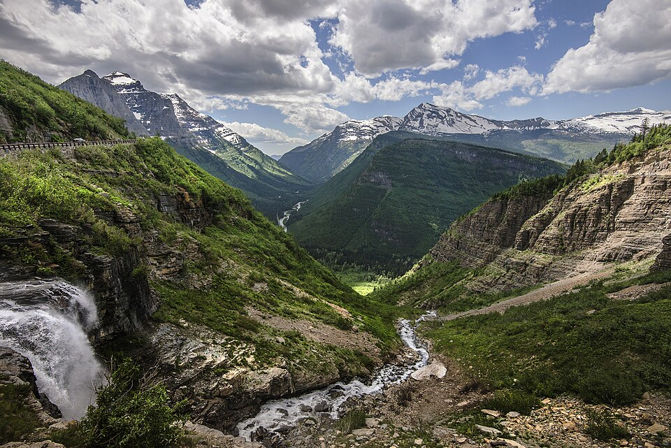
Going-to-the-Sun Road, MontanaGoing-to-the-Sun Road
Montana: Glacier National Park’s mountain road is a spectacular destination. Its alpine section opens seasonally; check road status and park entry requirements.
NPS road information →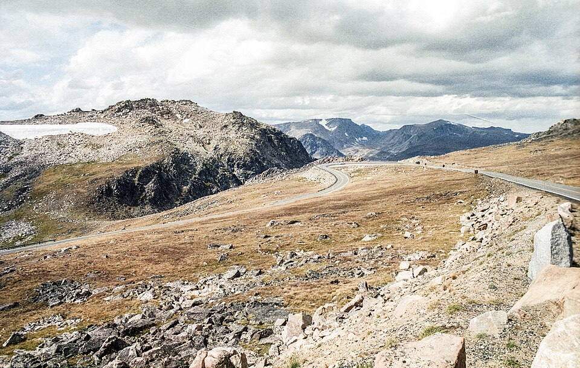
Beartooth Highway
Montana and Wyoming: US 212 climbs into alpine country near Yellowstone. Check seasonal road status and high-elevation weather.
Forest Service guide →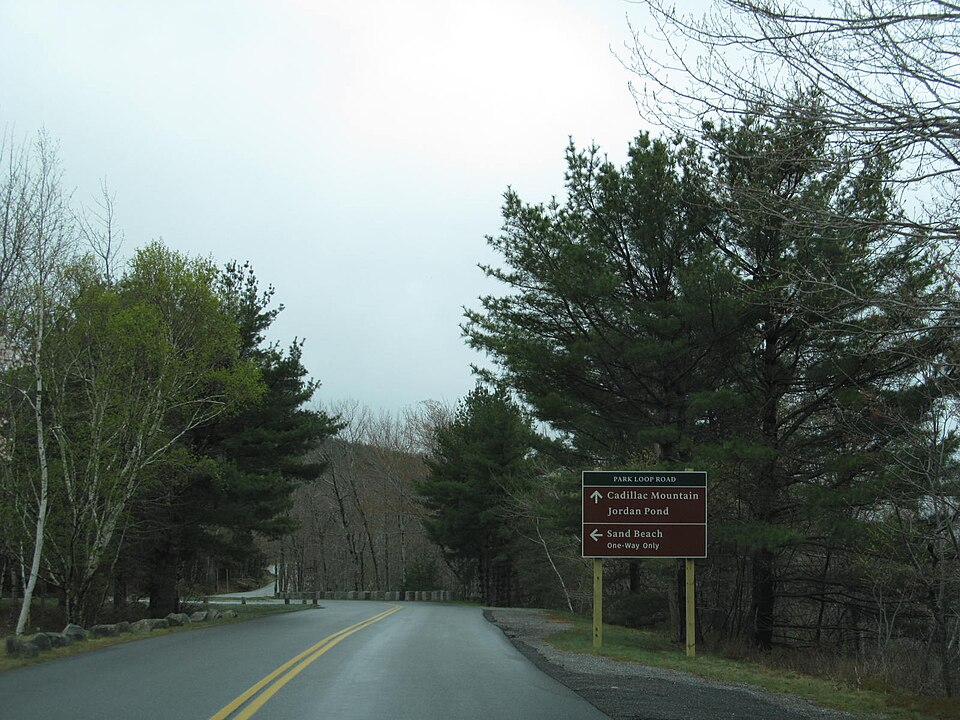
Acadia Park Loop Road
Maine: explore Acadia’s coast, woods, and mountain scenery. Check seasonal closures and park entry requirements.
NPS road guide →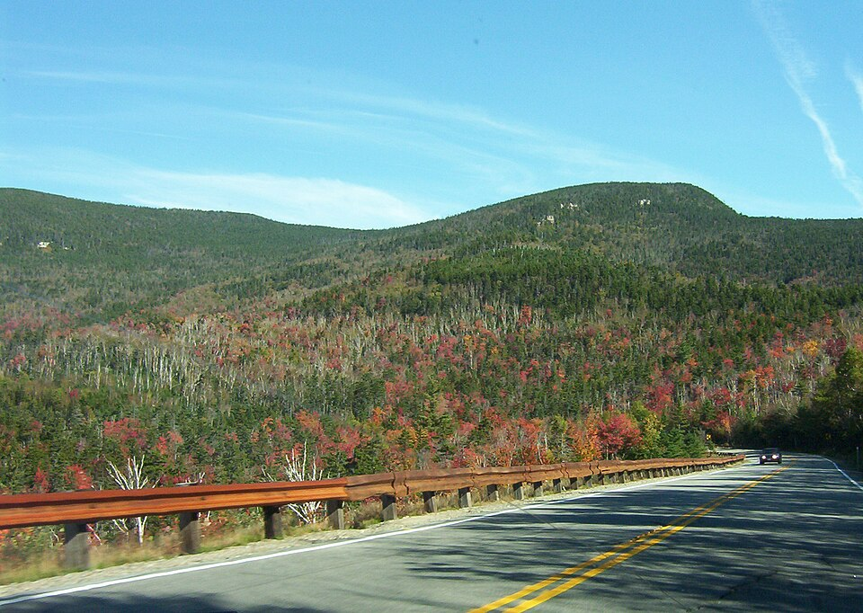
Kancamagus Scenic Byway
New Hampshire: Route 112 crosses the White Mountain National Forest between Lincoln and Conway.
Forest Service scenic drives →Needles Highway
South Dakota: ride among granite formations in Custer State Park; the road closes seasonally.
State park scenic drives →Iron Mountain Road
South Dakota: US 16A links Custer State Park and Mount Rushmore with tunnels and pigtail bridges. Photo: the Needles in Custer State Park.
State park scenic drives →White Mountains Trail
New Hampshire: a scenic loop linking mountain notches, towns, and the Kancamagus Highway.
White Mountains driving guide →Nelson Scenic Loop
Virginia: combine Routes 151, 664, and 56 with a stretch of the Blue Ridge Parkway.
Route guide →Custer Wildlife Loop
South Dakota: ride through Custer State Park’s wildlife country and give free-roaming animals plenty of room. Photo: the Needles in Custer State Park.
Wildlife Loop guide →Newfound Gap Road
Tennessee and North Carolina: US 441 crosses Great Smoky Mountains National Park. Check current road closures. Photo: Cherohala Skyway.
NPS road conditions →Pig Trail Scenic Byway
Arkansas: follow Route 23 through the Ozark National Forest. Photo: Rogers in northwest Arkansas.
Byway information →Rider resources
Wear protective gear, inspect your bike before departure, and never ride impaired.
Motorcycle Safety Foundation
Rider training for beginners and experienced riders.
Explore training →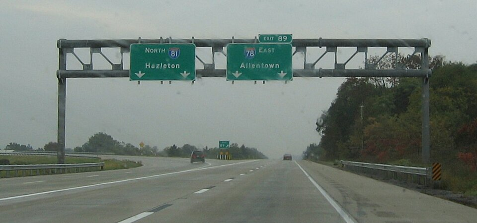
Interstate 78 and 81 in Pennsylvania511PA
Check Pennsylvania traffic, incidents, and road conditions before setting out.
Check conditions →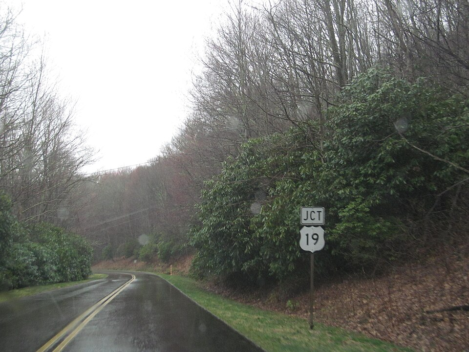
Blue Ridge Parkway, North CarolinaBlue Ridge Parkway closures
National Park Service updates for parkway travel planning.
Check closures →Pennsylvania Motorcycle Safety Program
Find Pennsylvania rider training and eligibility information. Photo: training in Oregon.
PennDOT training →Pennsylvania Motorcycle Operator Manual
PennDOT’s guide to licensing and riding skills. Photo: training in Oregon.
Read the manual (PDF) →MSF T-CLOCS inspection
Use a pre-ride checklist for tires, controls, lights, fluids, chassis, and stands.
Inspection checklist →NHTSA motorcycle safety
Federal guidance on protective gear, visibility, maintenance, and safe riding. Photo: training in Oregon.
Safety guidance →Choosing a motorcycle helmet
NHTSA advice on helmet fit and DOT compliance. Photo: training in Oregon.
Helmet guide →
Vehicle recalls
Use the NHTSA lookup to check for open safety recalls by VIN.
Check recalls →National Weather Service
Check forecasts, alerts, and radar before a ride. Photo: Blue Ridge Parkway.
Check weather →511NY
Check New York traffic, incidents, and road conditions.
Check New York roads →511NJ
Check New Jersey traffic, construction, and travel alerts.
Check New Jersey roads →Glacier road status
Check the National Park Service for seasonal access and travel restrictions on Going-to-the-Sun Road.
Check Glacier roads →Photo credits
Photographs are resized and may be cropped for the cards. Some show destinations or related activities rather than the events or organizations themselves.
- Lehigh Valley: Nicholas A. Tonelli, Wikimedia Commons, CC BY 2.0.
- Gettysburg: John Brighenti, Wikimedia Commons, CC BY 2.0.
- Lake George: H.G. Judd, Wikimedia Commons, CC BY-SA 3.0.
- Laconia: Malber, Wikimedia Commons, CC BY-SA 3.0.
- Ocean City: David, Wikimedia Commons, CC BY 2.0.
- Wellsboro: VitaleBaby, Wikimedia Commons, public domain.
- Huntington: Nyttend, Wikimedia Commons, public domain.
- Sturgis: Cumulus Clouds, Wikimedia Commons, CC BY-SA 3.0.
- Daytona Bike Week: Gamweb, Wikimedia Commons, CC BY-SA 3.0.
- Daytona Beach: Dough4872, Wikimedia Commons, CC BY-SA 3.0.
- Myrtle Beach: DiscoA340, cropped by Cork12, Wikimedia Commons, CC BY-SA 4.0.
- Rogers: Law7833, Wikimedia Commons, CC BY-SA 4.0.
- Scottsdale: Bernard Gagnon, Wikimedia Commons, CC BY-SA 3.0.
- Lower Delaware River: Famartin, Wikimedia Commons, CC BY 3.0.
- Delaware Water Gap: Quintin Soloviev, Wikimedia Commons, CC BY 4.0.
- Hawk’s Nest: b k, Wikimedia Commons, CC BY-SA 2.0.
- Route 6: Mr. Matté, Wikimedia Commons, CC BY-SA 4.0.
- Pennsylvania Grand Canyon: Eric Evans (Paco36), Wikimedia Commons, CC BY 2.5.
- Mount Washington: EgorovaSvetlana, Wikimedia Commons, CC BY-SA 4.0.
- Skyline Drive: Andrew Parlette, Wikimedia Commons, CC BY 2.0.
- Blue Ridge Parkway: Famartin, Wikimedia Commons, CC BY-SA 4.0.
- Back of the Dragon: Virginia State Parks staff, Wikimedia Commons, CC BY 2.0.
- Tail of the Dragon: William Klos, Wikimedia Commons, CC BY 2.0.
- Cherohala Skyway: Brian Stansberry, Wikimedia Commons, CC BY 3.0.
- Custer State Park: Andrew Parlette, Wikimedia Commons, CC BY 2.0.
- Going-to-the-Sun Road: NPS / Tim Rains, Wikimedia Commons, U.S. public domain.
- Motorcycle training: Tedder, Wikimedia Commons, CC BY 3.0.
- Pennsylvania highways: Wikimedia Commons, public domain.
- Blue Ridge Parkway conditions: Doug Kerr, Wikimedia Commons, CC BY-SA 2.0.
- Beartooth Highway: Acroterion, Wikimedia Commons, CC BY-SA 4.0.
- Acadia Park Loop Road: Dougtone, Wikimedia Commons, CC BY-SA 2.0.
- Kancamagus Highway: Matthew Teal, Wikimedia Commons, public domain.
- Lancaster: Daderot, Wikimedia Commons, public domain.
- Gettysburg Battlefield: Ken Lund, Wikimedia Commons, CC BY-SA 2.0.